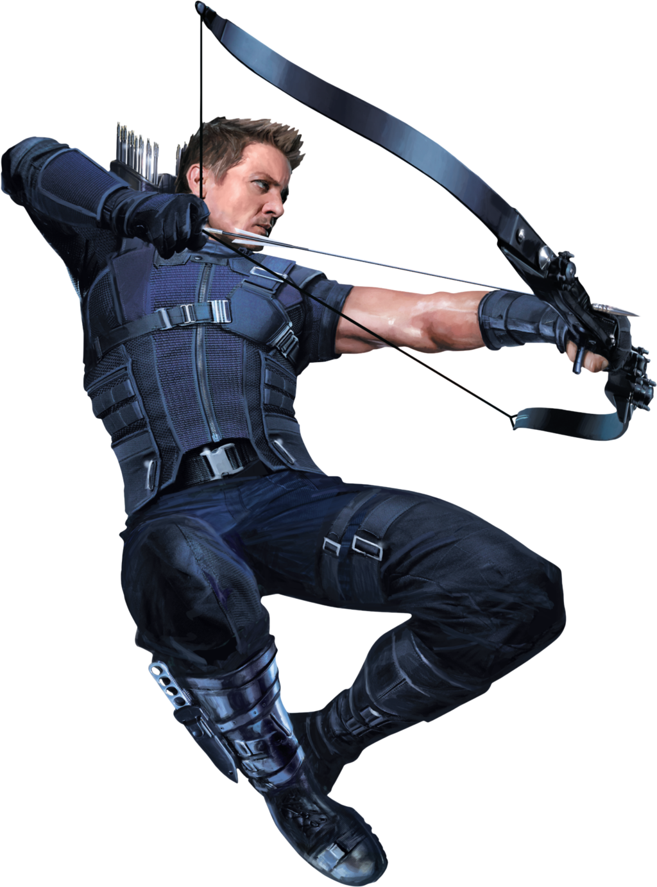

Clint Barton
Não possui superpoderes. Tornou-se um dos maiores arqueiros do mundo graças
a anos de treinamento intenso, reflexos excepcionais, mira impecável e habilidades em combate corpo a corpo.
Um arco de alta tecnologia e uma variedade de flechas especiais, como explosivas, elétricas, de fumaça, de cabo
de aço, EMP e muitas outras, desenvolvidas para diferentes missões.

Clint frequentemente enfrenta o peso de conciliar sua vida como Vingador com sua família. Em diversos momentos,
a culpa pelas perdas de aliados e o medo de colocar seus entes queridos em perigo afetam suas decisões.
Por ser um humano comum, sem superpoderes, depende totalmente de sua estratégia, precisão e equipamentos.
Em confrontos diretos contra inimigos extremamente poderosos, como deuses ou seres cósmicos, fica em desvantagem física.